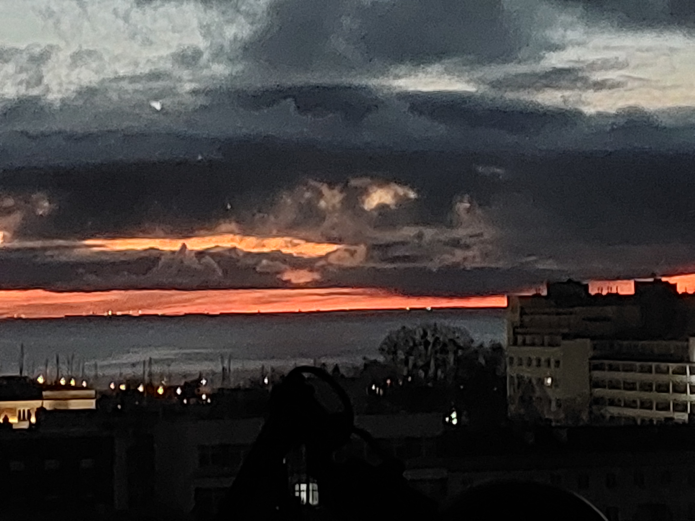
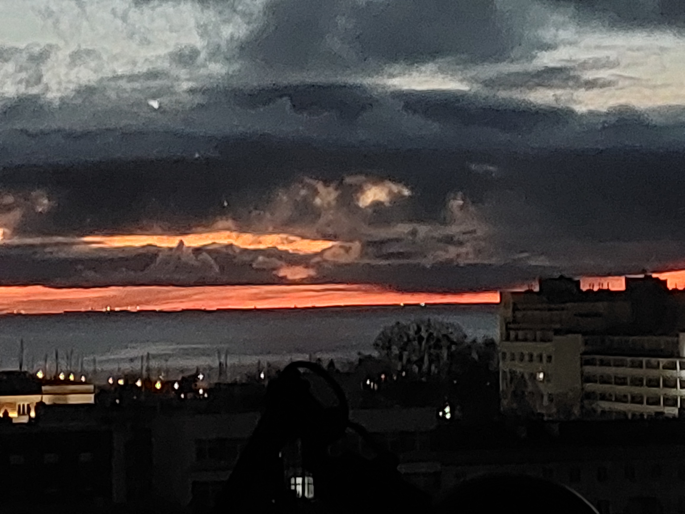

- no fajna ta Gdynia
- Dynia
- Tęsknię wsm
- Dużo chwil tam spędziłem
- no ta
| Gdzie jest | Jakoś na północy Polski nad morzem |
|---|---|
| Ilu ludzi | trochę ponad 250k |
| Czy to wieś | niby miasto jednak |
| hm | chyba tam przytulniej jest niż w wwa |
| fajne rzeczy | morze, plaża, las, molo |
| ogólnie | reszta trójmiasta też miła |
mały kawałek


 
